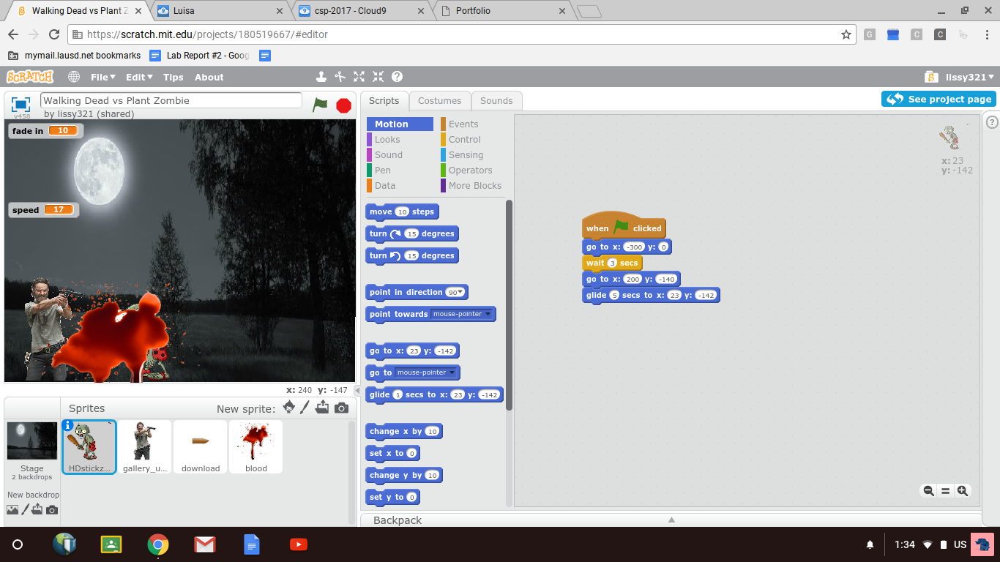
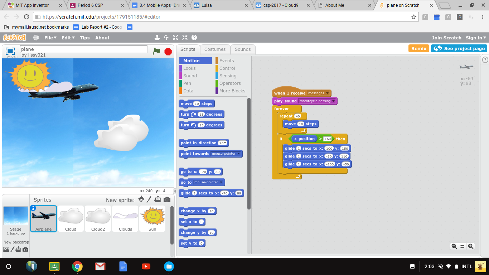
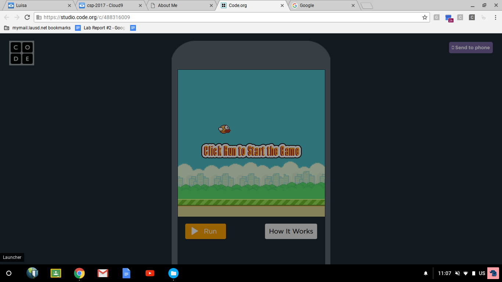
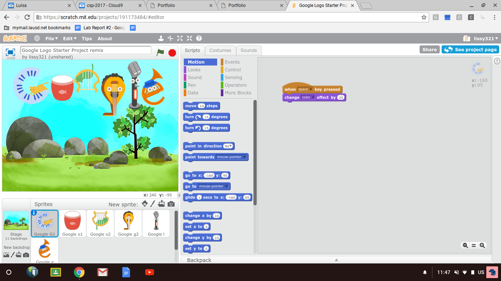
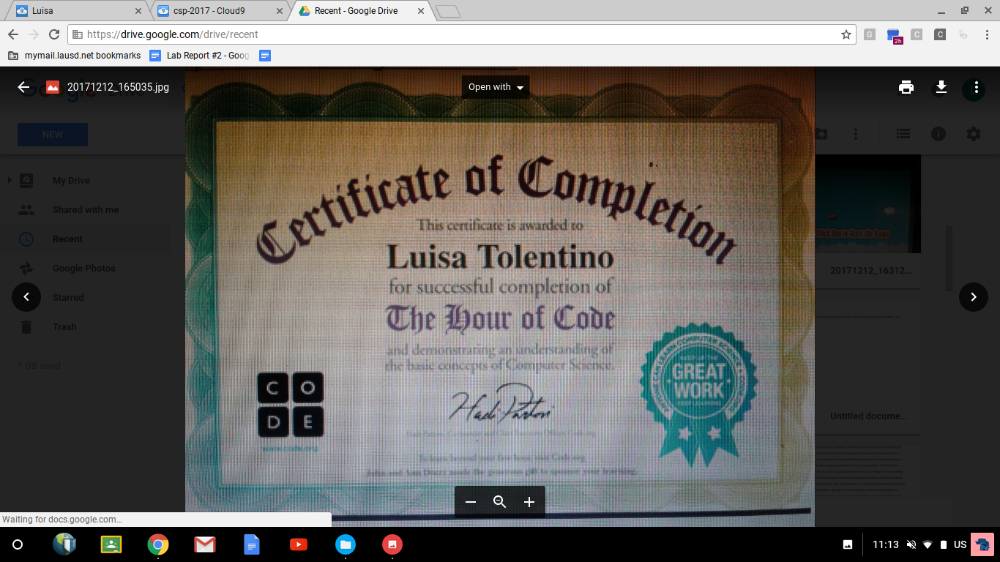

This is my Portfolio Page!
This page will display all my scratch projects that i've completed so far on the wesbite scratch. It will also consists of the certficates I have gained from the Hour of Code website.

This animation consists of a sprite (which is me) that glides randomly when the space bar is pressed. The background changes when the key a is pressed. If one wants to increase the size of the sprite the key d is pressed and to decrease the size the key s is pressed.
This animation consists of two sprites which are Rick from the walking dead and a zombie from plants vs. zombies. When the flag is clicked the story begins.
When you press the sun the plane and clouds will automatically move in a random direction and each will stop at different positions when the sun is not pressed.
This game is just like the original game of flappy bird but can be accessed in a computer. The game is initiated when you click on the screen and as the bird is flapping it is one's duty to tap so that the bird is kept elevated without touching the ground.
This Google animation is activated when one clicks on the space bar or on the the keytabs s and a.
These are the certficates that I obtained from completing the google animation and the flappy bird game.
